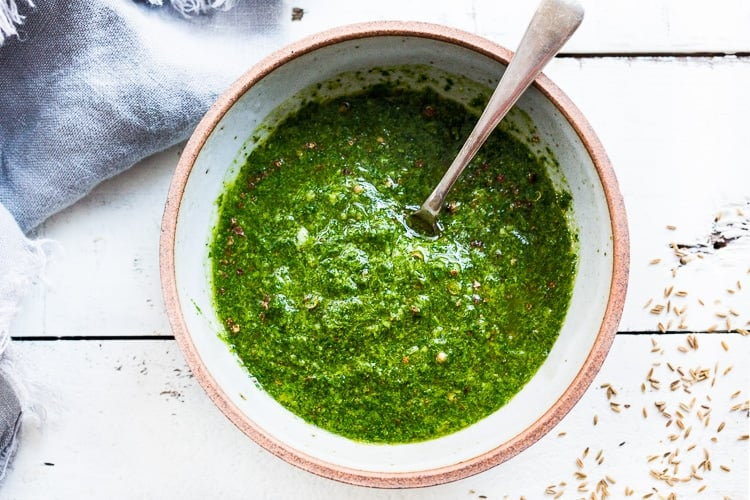

Chermoula

What is actually this?!
A simple recipe for Chermoula- a bright and flavorful North African condiment that can be used to give soups, stew, fish, chicken a burst of flavor and brightness.
What are the ingridients that we need?!
- 1 teaspoon cumin seeds, toasted
- 1 teaspoon coriander seeds, toasted
- 1 cup cilantro (small stems ok)
- 1 cup Italian parsley ( or sub more cilantro)
- 1 teaspoon fresh ginger (a thin slice about the size of a quarter)
- 1 teaspoon fresh thyme (optional)
- 2 garlic cloves
- 1/2 cup olive oil
- and few more xD
3,2,1... How to make it?!
- Toast seeds in a dry skillet over medium heat, stirring until fragrant and golden.
- Add all ingredients to a food processor and pulse until well combined, but not too smooth.
- Keep in an air tight container for up to 4 days in the fridge.
Go back home